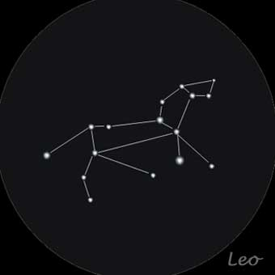
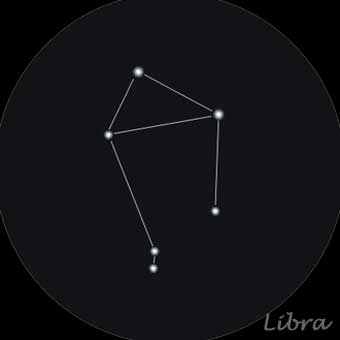
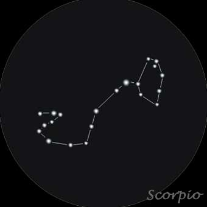
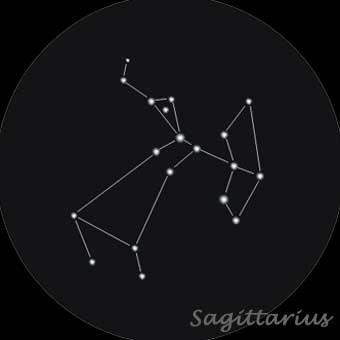
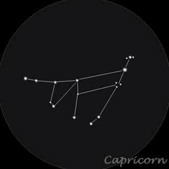
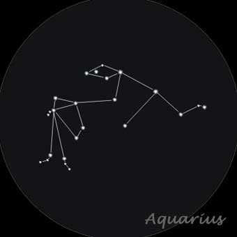
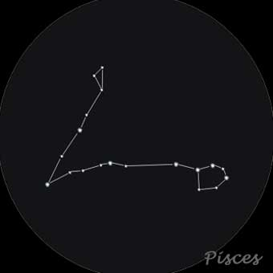

In astronomy, the term constellation actually regers to the area within a boundry drawn around that section of the sky, not the actual group of stars recognizable to the naked eye (Astronomers call them asterisms). Many-if not most-constellations contain asterisms of the same name.
The constellations serve us a sort of map; we have assigned every star visable from Earth to a constellation. Other space phenomena are assigned to constellations as well-an astrophysicist might refer to a "nebula in the constellation of Taurus". Even though we can't see these deep-space objects with our naked eye, we can locate the boundaries of their constellations.
The unique path drawn across the sky by the planets and the moon at night, and by the sunduring the day, is called the ecliptic. I foyu traced an imagenery line across that path on a star map, it would cross through thirteen constellations: Aries, Taurus, Gemini, Cancer, Leo, Virgo, Libra, Scorpio, Ophiuchus, Saggitarius, Capricorn, Aquarius and Pisces. All but Ophiuchus, which only barely touches the ecliptic, are fimiliar to us as the twe;ve signs of the Western astrology, and are also known as the constellations of the zodiac.
The Zodiac:
Some other interesting constellations:
Aries is depicted in Ptolemy's system as a ram, and Ancient Engyptian astronomy associated it with a ram-headed god. Ptolemy was likely influenced by these depictions, but Aries has also been said to represent the ram with golden fleece that Jason and the Argonauts quested for in Greek mytgology. The constellation Aries contains a number of distant galaxies, including some so close to one another that their gravitational fields have started to collide(the same way our Milky Way galaxy might one day collide with our neighbouring galaxy Andromeda). Aries' brightest star is Alpha Arietis. Its alternative name, Hamal, comes from the Arabic for "the head of the ram".
Taurus is usually shown on star maps head-on, with only his front legs, chest, and head visible. It is home to two prominent star clusters: the Pleiades and the Hyades. The Pleiades, also called the Seven Sisters, form the star cluster most visible to the naked eye(the seven stars where once considered a constellation). The Hyades were the five daughers of Atlas-the Titan who carried the world on his shoulders in Greek mythology-and half-sisters to the Pleiades. Taures' brightest star is Alpha Tauri, or Aldebaran, comes from the Arabic word for "to follow", because Aldebaran rises and sets after the Pleiades, following them across the sky.
The word "genimi" is Latin for "twins". The mythological twins it is usually assosiated with are Castor and Pollux, which are also the names of the constellation's two brightest stars. In Greek mythology, Castor and Pollux were the twin sons of Zues, and siblings of Helen of Troy. They are commonly depicted holding hands or with thier arms around one another. Gemini serves as a locator for the Geminids, a prominent meteor shower that occurs annually in December when the Earth passes through a trail of dust in the wake of an asteroid called 3200 Phaethon. During a Geminids shower, it is possible to see as many as a hundred meteors in an hour.
The word "cancer" comes from the Latin for "crab". The constellation is very dim compared to other star groupings-it's actually the dimmest of all constellations of the zodiac. Ancient humans gave it the name and story anyway, probably to fill the gap along the ecliptic between its brighter neighbours, Gemini and Leo. Cancer is home to one of the closest open clusters to our solar system: Messier 44, nicknamed the Beehive Cluster. This grouping of stars is visible as a nebulus blur with the naked eye, so even ancient astronomers could see it. In the 17th century, Galileo Galilei observed the Beehive with a telescope and was able to identify 40 individual stars. Today, we know that the Beehive contains over a thousand stars. The name of Camcer's brightest star, Beta Cancri or Altarf, is Arabic for "the edge".
Leo is connected with two mythological stories. In one, it is the Nemean lion, which Hercules hunted and skinned, thereafter wearing the skin. In the tragedy of Pyramus and Thisbe, Leo itself was the hunter, whose bloody jaws led Pyramus to mistakenly believe his lover had been killed. The constellation contains many bright stars and is a locator for the Leonids, one of the most abundant of our annual meteor showers. The name of the constellation's brighest star, Regulus(or Alpha Leonis), comes from the Latin for "the prince".
Virgo is the second-largest constellation in the sky, suprassed in size only by Hydra, and its name is Latin for "virgin". Virgo is tycally depicted as the Greek goddess of agriculture and fertility, Demeter. Virgo contains the Virgo Cluster, a cluster of gravitationally bound galaxies. And it's also the namesake of the Virgo Supercluster, the supercluster of galaxies that our own Milky Way belongs to. On star maps, Virgo is often shown with a stalk of wheat or grass in her arms, and the name of its brightest star, Spica(or Alpha Virginis), is Latin for "ear"(likw the aer of corn). Spica is actually a binary star system, but its two component stars orbit each other so closely that they are difficult to resolve as separate stars even with the use of a telescope.
Libra is a faint, medium-sized constellation. Its name means "weighing scales", and it is usually depicted as a simple beam scale. Libar has alternately been depicted as the pincers of the scorpion Scorpius, and was sometimes called "the scorpion's claws" in ancient times. This constellation may have roots as far back as Babylonian times. One of Libra's stars, a red dwarf star named Gliese 581, is thought to be the home star to a potentially habitable exoplanet. The name of the constellation's brightest star, Zubeneschamali, comes from the Arabic for "the northen claw".
Scorpius is located next to the constellation Libra. It has its earliest roots in Babylonian star observation, but in Greek mythology, Scorpius represents the scorpion that fought and killed Orion the hunter. Scorpius lies along the Milky Way and contains many interesting star clusters, including Messier 7, also known as the Ptolemy Cluster, an open star cluster named after Claudius Ptolemy himself. The name of its brightest star, Antares(Alpha Scorpii), comes from an ancient Greek phrase meaning "like Mars". This is because Antares is a red supergiant that sctually appears slightly reddish even to the naked eye, which is reminiscent of the red planet Mars, which gets its rusty color from oxidized iron on its surface.
Sagittariius is depicted as a centaur using a bow and arrow. It also contains an asterism, the "Teapot". Since the constellation overlaps with the Milky Way, the Teapot is sometimes depicted as pouring the Milky Way out of its spout. Sagittarius contains many stars with known exoplanets. The name of its brightest star, Kaus Australis(Epsilon Sagittarii), comes from the Arabic for "bow" and the Latin for "southern", and in most depictions its location is on the outstreched bow.
Capricornus is represented most often as a sea-goat, a chimera with the head of a goat and the body of a fish. The ancient Greeks associated it with Pan, the horned god of shepherds and flocks. But this constellation has its roots even earlier in ancient history, with the Sumerians, who called it the "goat-fish". Carpricornus is located in the region of the sky known as "the sea" for the many water-related constellations it contains, including Capricornus' bordering constellation Aquarius, the water-bearer, and Piscis Austrinus, the southern fish. The name of this constellation's brightest star, Dened Algedi(Delta Capricorni), comes from the Arabic for "the goat's tail".
Aquarius is the tenth largest constellation in the sky, but is made up of relatively dim stars. Depictions of Aquarius usually show him holding a vase or large jar, spilling water down onto the constellation Piscis Austrinis. Aquarius is in the region of the sky called "the sea", where Capricornus the sea-goat, Cetus the sea monster, Delphinus the dolphin, and Pisces the fish reside.The name of it's brightest star is Sadalsuud(Beta Aquarii) comes from the Arabic phrase meaning "the luckiest of the lucky".
Named with the Latin word for "fishes", Pisces is often depicted as a pair of fishes, usually tied together with a lenght of cord. This depiction is based on a Greek myth about Aphrodite, the goddess of beauty, and her son Eros, the god of love, in which they transformed themselves into fish to escape from a monster. Apherg(Eta Piscium), the consttellation's brightest star, was associated with water even in Babylonian times, when it was referred to as Kullat Nunu, the "bucket of fish".
